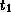
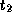

Common Lisp the Language, 2nd Edition

These functions create and process gatherers.
[Function]
gatherer collector
The collector must be a function of type (function ((series )) ). Given this function, gatherer returns a gatherer that accepts elements of type and returns a final result of type . The method for combining elements used by the gatherer is the same as the one used by the collector.
[Function]
next-out gatherer item
Given a gatherer and a value, next-out enters the value into the gatherer.
[Function]
result-of gatherer
result-of retrieves the net result from a gatherer. result-of can be applied at any time. However, it is an error to apply result-of twice to the same gatherer or to apply next-out to a gatherer once result-of has been applied.
(let ((g (gatherer #'collect-sum)))
(dolist (i '(1 2 3 4))
(next-out g i)
(if (evenp i) (next-out g (* 10 i))))
(result-of g))
=> 70
[Macro]
gathering ({(var fn)}*) {form}*
The first subform must be a list of pairs. The first element of each pair, var, must be a variable name. The second element of each pair, fn, must be a form that when wrapped in (function ...) is acceptable as an argument to gatherer. Each symbol is bound to a gatherer constructed from the corresponding collector. The body (consisting of the forms) is evaluated in the scope of these bindings. When this evaluation is complete, gathering returns the result-of each gatherer. If there are n pairs in the binding list, gathering returns n values. For example:
(defun examp (data)
(gathering ((x collect) (y collect-sum))
(iterate ((i (scan data)))
(case (first i)
(:slot (next-out x (second i)))
(:part (dolist (j (second i)) (next-out x j))))
(next-out y (third i)))))
(examp '((:slot a 10) (:part (c d) 40))) => (a c d) and 50
As a further illustration of gatherers, consider the following definition for a simplified version of gathering that handles only one binding pair.
(defmacro simple-gathering (((var collector)) &body body)
`(let ((,var (gatherer (function ,collector))))
,@body
(result-of ,var)))
The full capabilities of
gathering can be supported in much the same way.